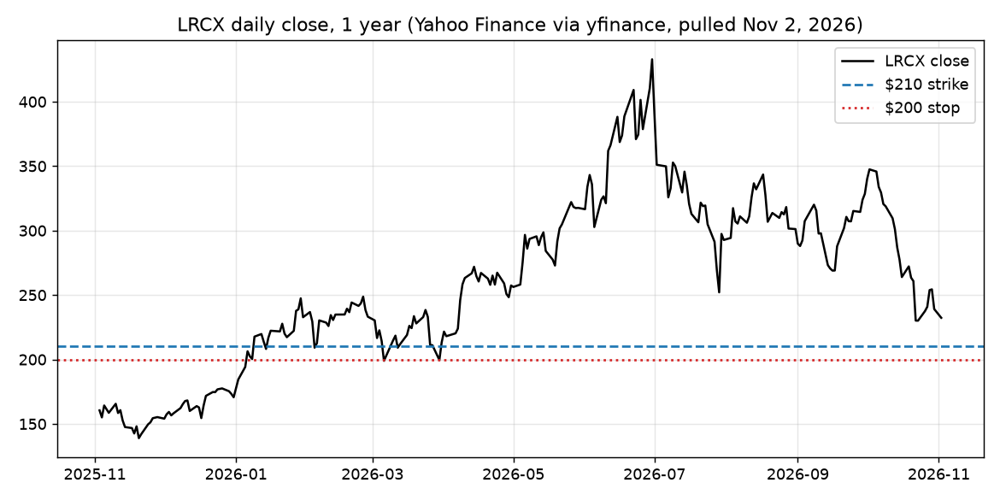

The short version
Our view (OPINION): we would gladly own Lam Research at $204.43 a share, and selling one put option pays us $556.67 to wait 32 days for that chance.
Lam closed the morning at $233.94, about 46% below its June high (INFERENCE). If it stays at or above $210 through Dec 4, 2026, we keep the $556.67. If it closes below $200, we step aside.

Source: Yahoo Finance daily closes, pulled Nov 2, 2026. Click the chart to open it full size.
How to read the labels. FACT comes from a primary source or a market quote, linked where it applies. REPORTED comes from a named secondary source. INFERENCE is our own arithmetic. ESTIMATE is an assumption we spell out. OPINION is our judgment.
Our view
Long lean, through a short put (OPINION). In AI, the money goes to whoever owns scarce computing power, memory and electricity. Memory makers are the second toll booth on that road. Lam sells them the etch and deposition tools they need to add capacity. You don't have to pick the winning memory maker if you sell picks and shovels to all of them.
The historical rhyme
OPINION In every gold rush, the steady earners were the people selling supplies, and they still got marked down hard whenever the rush looked like it was cooling. Chip equipment stocks have followed that pattern through past memory cycles: they fall first on worries about spending cuts and recover when the buying keeps coming.
FACT Over the past year Lam's daily close (Yahoo, adjusted) ran from a low of $138.95 on Nov 20, 2025 to a high of $432.87 on Jun 30, 2026. At $233.94 (11:11 AM CT, Nov 2, 2026), it sits about 46% below that high (INFERENCE from those two numbers).
OPINION The market has already priced in a cooling cycle. Our strike sits another 10% lower than that.
Upside vs downside
Profit or loss on one contract, by Dec 4, 2026:
| Outcome | Result on 1 contract |
|---|---|
| Lam stays at or above $210 (option expires worthless) | +$556.67 (FACT, from the fill) |
| Buy back at $1.00 | +$456.67 |
| Assigned with Lam at $204.43 | $0 (break-even) |
| Assigned with Lam at $200 (stop level) | −$443.33 |
| Lam goes to $0 | −$20,443.33 (worst case) |
INFERENCE The most we can make is $556.67 on $21,000 set aside, or 2.65% in 32 days. The stop at $200 is meant to keep the realistic loss in the hundreds of dollars. If Lam gaps through $200, buying the put back costs more than the table shows; the worst-case row covers that.
Dates ahead
| Date (CT) | Event | Source |
|---|---|---|
| Nov 6, 7:30 AM | October jobs report | FACT, BLS schedule |
| Nov 10, 7:30 AM | October consumer price index | FACT, BLS schedule |
| Nov 17 | NVIDIA results for its fiscal third quarter, which set the tone for AI spending | FACT, NVIDIA investor events |
| Early Dec | Lam dividend record date, not yet declared | INFERENCE from last year's timing (see sources below) |
| Dec 4, 7:30 AM | November jobs report; the option expires the same day | FACT, BLS schedule |
| About Jan 27, 2027 | Lam's next earnings report. Lam has not announced the date | REPORTED, tentative, Investing.com |
INFERENCE The Dec 4 expiry comes about eight weeks before a late-January report, so this trade does not run through an earnings release. Lam last reported on Oct 21, 2026 (FACT, Lam release).
What would change our opinion
- By Dec 4, 2026: Lam closes below $200. That would mean the market expects memory makers to cut their tool spending, not just slow it down. We buy back the put and step aside (OPINION).
- Nov 17, 2026: NVIDIA's results or outlook point to slower AI data center buying. That would weaken the whole chain of AI suppliers (OPINION).
- Ongoing through the quarter: TrendForce expects DRAM contract price gains to slow to +10–15% in the fourth quarter of 2026 (REPORTED). A move into actual price declines would undercut the reason memory makers keep buying tools (INFERENCE).
Paper trade
Historical research expression — paper-only, not a current position report or live portfolio mark. Entry snapshot: Nov 2, 2026, 11:11 AM CT.
| Item | Detail |
|---|---|
| Trade | Sell 1 Lam Research (LRCX) Dec 4, 2026 $210 put |
| Fill | $5.5667 a share, a $556.67 credit, figured as the $5.00 bid plus one third of the $1.70 spread to the $6.70 ask (quote at 11:11 AM CT, Nov 2, 2026; last trade $6.20 at 10:47 AM CT; FACT, Yahoo option chain) |
| Lam price at entry | $233.94 (11:11 AM CT, Nov 2, 2026) |
| Historical entry collateral | $21,000 |
| Cost if assigned | $204.43 a share, 12.6% below the entry price |
| Target | Buy back at $1.00 (+$456.67) |
| Stop | Lam closes below $200 |
| Expiry | Dec 4, 2026 |
| Max loss | $20,443.33, if Lam went to zero |
| Trading activity | Open interest of 50 contracts and a $1.70-wide market. Only one contract had traded by the time of the quote. |
INFERENCE The same memory cycle affects Lam, ASML, SanDisk and Micron. A hard drop in chip stocks would pressure these research cases together.
Sources
- Yahoo Finance LRCX price history and option chain
- Lam, September-quarter 2026 results (Oct 21, 2026)
- Lam, quarterly dividend declaration (Nov 6, 2025; last year's record date was Dec 3, 2025)
- Lam, December-quarter conference call notice (Jan 7, 2026; that call was held Jan 28, 2026)
- Investing.com Lam earnings calendar
- BLS release schedules for jobs and consumer prices; NVIDIA investor events